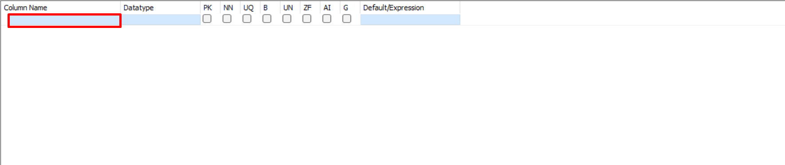
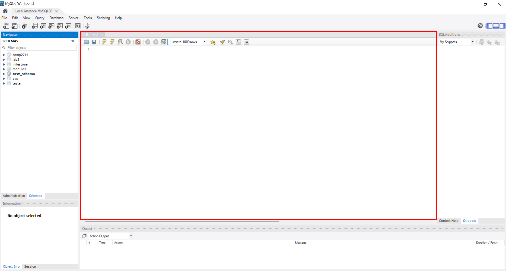

Common MySQL Workbench Tasks¶
Overview¶
This section will cover common tasks in MySQL Workbench. it will go over the creation and deletion of schemas, tables, columns, and row. This guide will also describe how to view your data, as well how to refresh your database to view any pending changes.
Schema Tasks¶
The tasks under this section outline the steps needed to manipulate schemas in MySQL Workbench.
Create a Schema¶
- Select the Create a new schema icon.
- Enter a Schema Name and Select
Apply.
- Select
Apply.
Select
Finish.
Note
Refresh might be needed to see the new schema.
Success
Your new schema will appear under Schemas on the left.

Make a Schema Default¶
Double-Click your schema name.
Note
Make sure you are double clicking the schema name and not the area to the right of the name.
Success
Your default schema will be bolded in Schemas on the left.


Delete a Schema¶
- Right-Click your schema and Select
Drop Schema.
Select
Drop Now.
Success
Your schema will be removed from Schemas on the left.


Table Tasks¶
Create a Table¶
- Select the arrow beside your schema.
- Right-Click
Tablesand SelectCreate Table.
- Enter your Table Name.
- Double-Click the row under Column Name.
- Enter your Column name.
Select your Datatype.
Note
If PK or Primary Key is selected, you must have NN or Not Null selected as well.
Add additional columns by repeating steps 5, 6, and 7.
- Select
Apply.
- Select
Apply.
Select
Finish.
Success
It will show that the table was successfully created in the Output section at the bottom of the screen and the new table will appear under Schemas on the left, under your selected schema.


View a Table¶
- Double-Click your schema.
- Double-Click
Tables.
Right-Click the table you want to view and Select
Select Rows - Limit 1000.
Success
It will generate a select all statement and show the selected table data under the Result Grid.


Delete a table¶
- Double-Click your schema.
- Double-Click
Tables.- Right-Click the table you want to delete and Select
Drop Table.
Select
Drop Now.
Success
Your table will be removed from Schemas on the left from your selected schema.


SQL Tasks¶
Open a New SQL Tab¶
Select the Create a new SQL tab icon.
Success
Your new SQL tab will be displayed on the middle of the screen.


Save a New SQL File¶
- Select
File>Save Script As.
Save your SQL file to your desired location.
Note
You can also use the Save icon in the editor.
Success
You can find your file in the location you saved it in.
Open a SQL File¶
- Select
File>Open SQL Script.
Select your SQL file.
Note
You can also use the Open icon in the editor or Open a SQL script file icon at the top left of the screen.
Success
Your SQL file is opened in the editor.


Refresh all¶
Right-Click anywhere under Schemas and Select
Refresh All.
Success
Your schemas are now all up to date.

Run a SQL Query¶
Select the Execute icon in the editor.
Note
This is with the assumption that you have a query in the editor already.
Success
Your query has successfully been executed. You can see the outcome of the query as a system description under Output .


Conclusion¶
At the end of this section you will know how to:
- For Schemas:
- Create a schema
- Make a schema default
- Delete a schema
- For Tables:
- Create a table
- View a table
- Delete a table
- For SQL tabs:
- Open a new SQL tab
- Save a new SQL file
- Open a SQL file
Congratulations. The next section will go over importing a CSV: